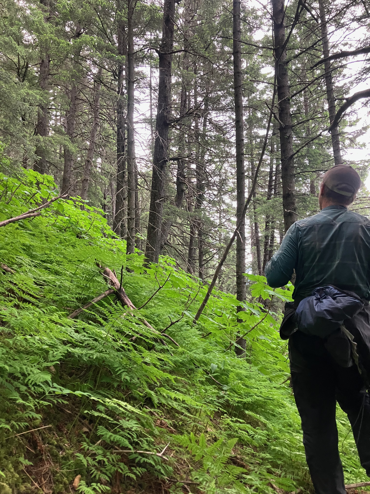
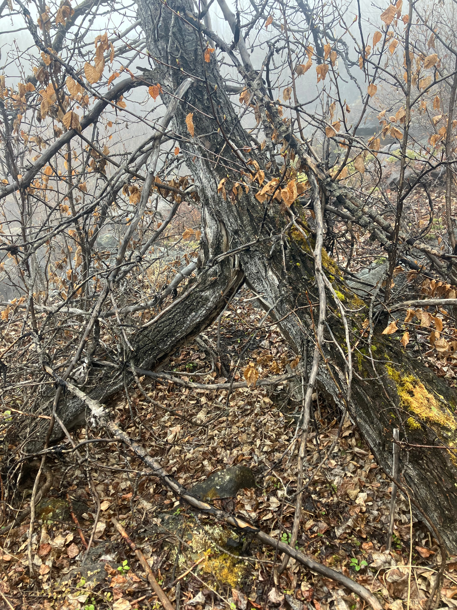
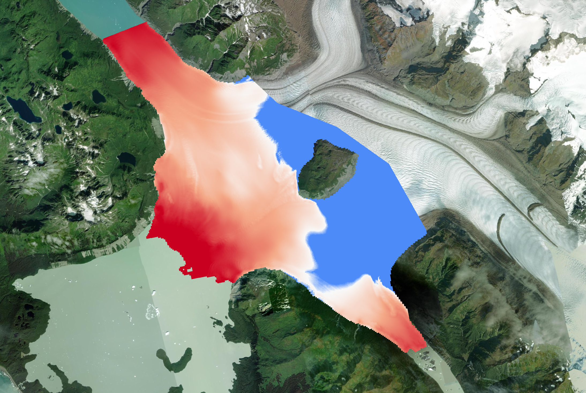
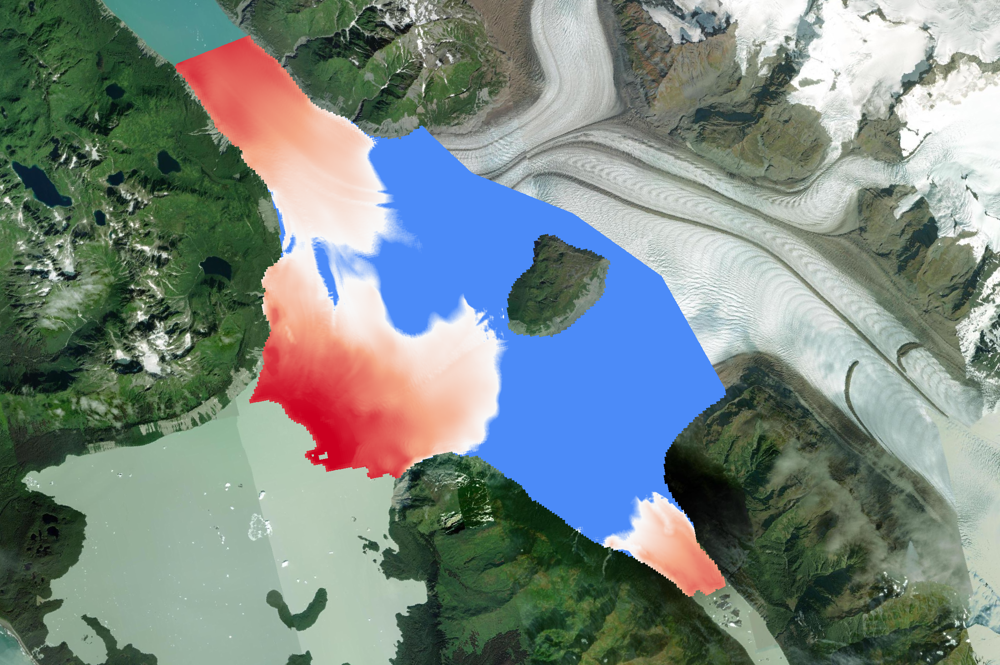

Earth Science · Geohazards
I am interested in the way landscapes change in dynamic environments.
Research interests and experience
I am currently an undergraduate at Colorado School of Mines studying geophysics. Furthermore, I have the pleasure of calling myself Bretwood Higman (Hig)'s intern. Hig is truly a unique reseracher in the way he ties together wilderness adventure, geomorphology, remote sensing, and community based decision making. Through working with Hig I have had many amazing field experiences in Alaska and I can't wait for all the amazing opprtunities to come. Specifically, in the 2026 Alaskan summer field season I will be taking on a project using tree ring information to understand past deformational histories of landslides (Dendrogeomorphology).
Undergraduate research


2026
Trees are an excelent catologer of deformation. They bend based on ground movement, and the structure of their tree rings can accurately date when these deformational events will occur. In the upcoming 2026 summer field season, Hig and I will be collecting tree cookies (thin cross-sections from dead tress) and cores. Then this upcoming fall, we will quantitatively analyze our field data to reconstruct past deformational histories.


2026
Using airborne radar and lidar along with satellite glacier thickness, we roughly calculated when two distinct lake breaching events will occur at Grand Plateau Glacier in Southeast Alaska. The breaching threshold was calculated using the buoyant valve theory, and the above maps show when there is a pathway for breaching to occur (red is below the threshold). The left image shows a breaching event form Litlle Grand Plateau to Grand Plateau lake happening in 2030, and the right panel shows breaching occuring from Alsek lake to Grand Plateau lake in 2035.